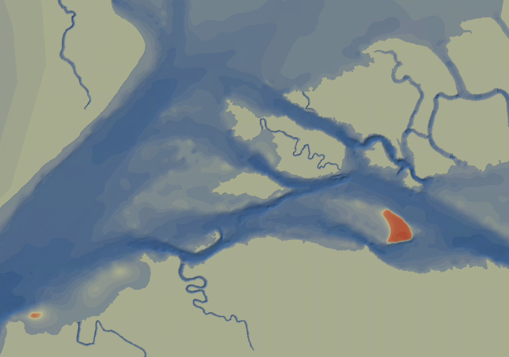

<div class="blurb">
	<h2>Historical Sacramento - San Joaquin Delta</h2>
	<p>Example photo: </p>
	<p></p>
	
	<h3>
	<p>Project Repo is located at: <a href="https://bitbucket.org/ambell/hdem">bitbucket.com/ambell/hdem</a></p>
	</h3>
	
	<h3><a href="/projects/leaflet_esri.html">HDEM leaflet example</a></h3>
	
	<h3><a href="/projects/test.html">ESRI leaflet example</a></h3>
	
	
	<h3><a href="/projects/before_after_slider.html">JQuery Slider</a></h3>
	
	<h5>From: http://zevross.com/blog/2014/08/12/add-a-before-after-map-slider-to-a-leaflet-map/</h5>
	
	
	
	
</div><!-- /.blurb -->


